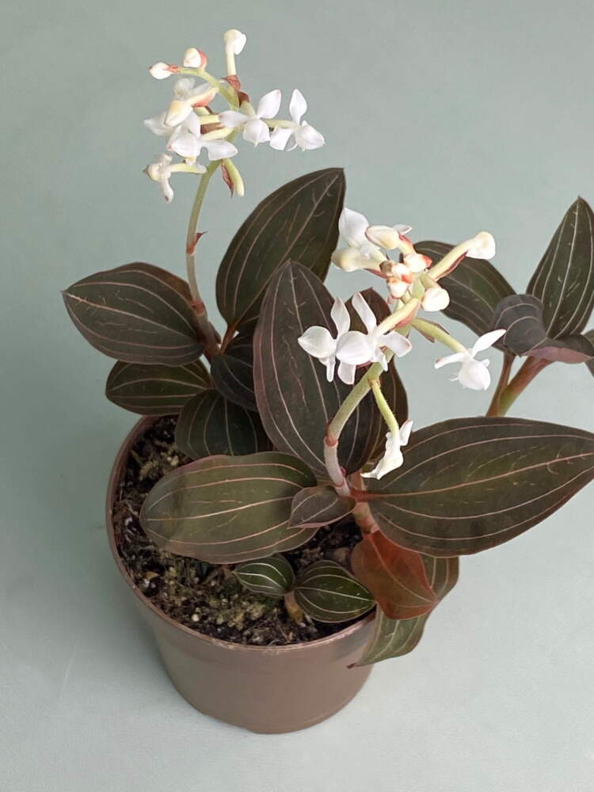

Лудизия
Лудизия (Ludisia) е вид орхидея, известна със своите декоративни листа, които са лъскави, тъмнозелени и могат да имат червени или бели ивици. Цветята й са малки и нежни, обикновено бели или кремави.
Основни характеристики:- Цветя: Малки, бели или кремави.
- Листа: Лъскави, тъмнозелени с червени ивици.
- Растеж: Компактно растение с бавен растеж.
- Светлина: Обича ярка, но разсеяна светлина. Не обича пряка слънчева светлина.
- Температура: 18-24°C през деня и 15-18°C през нощта.
- Поливане: Редовно, но не допускайте застой на вода. Почвата трябва да изсъхва леко между поливанията.
- Влажност: Висока (60-80%).
- Субстрат: Смес за орхидеи с добър дренаж.
Лудизия е лесна за отглеждане, подходяща за вътрешни условия, и е изключително декоративна благодарение на красивите си листа.
